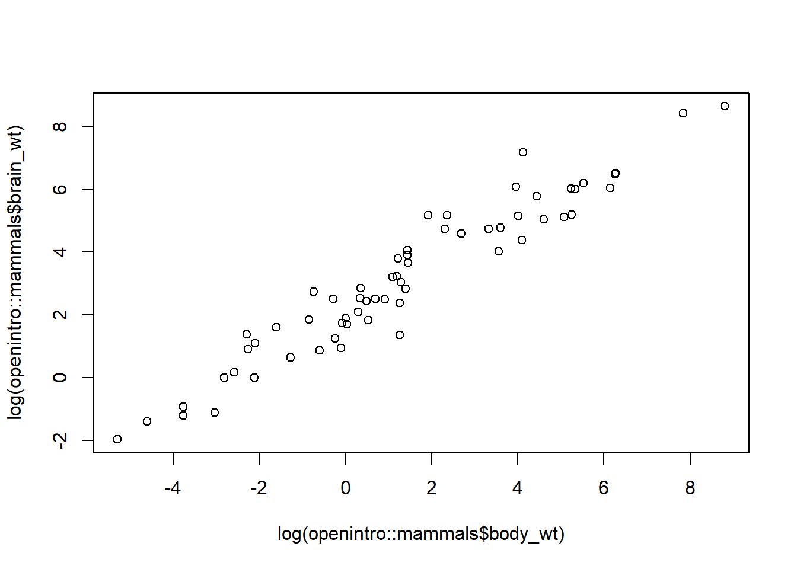

22 In-Class Assignments
22.1 R Class
Here are some programming questions based on the material we examined in class:
22.1.1 Arithmetic Operators and Expressions
- Calculate the result of
5 + 5 / 2. - Evaluate
3 * 2^2. - Compute the value of
(3*2)^2. - Given
z <- 5andw <- c(3,7,9,2), what is the result ofz + w[3]?
22.1.2 Working with Vectors
- Assign the variable
xto be a vector containing the values 5, 5, 6, 2. - Assign the variable
yto be a vector containing the values 3, 3, 1, 7. - Calculate the sum of vectors
xandy. - Subtract vector
yfrom vectorx. - Assign vector
das the result of dividing vectoryby vectorx.
22.1.4 Dealing with Missing Values
- Given
dat.1 <- c(-1,NA,1,1,-1), replace the missing values with zeros. - Calculate the mean of
dat.1without removing missing values. - Calculate the mean of
dat.1after removing missing values.
22.1.5 Data Classes and Basic Types
- Create a numeric variable
numwith the value 1.2. - Convert 2.2 to an integer and assign it to the variable
int. - Create a character variable
charwith the value “datacamp”. - Create a logical variable
log_truewith the value TRUE.
22.1.6 Factors and Lists
- Create a factor variable
facwith the levels “good”, “bad”, “ugly”. - Access the second level of the factor
fac. - Create a list
combined_listcontaining vectorslis1,lis2, andlis3. - Access the third element of the third vector in
combined_list.
22.1.7 Matrix and DataFrame
- Create a 2x3 matrix
Mwith values from 1 to 6 filled by rows. - Create a 2x3 matrix
Mwith values from 1 to 6 filled by columns. - Create a data frame
datasetwith columns: Person, Age, Weight, Height, Salary. - Calculate the number of rows in the data frame
dataset.
22.1.8 Data Input and Output
- Read the CSV file named “co2.csv” located in the “./Data/” directory.
- Use the “read_xlsx” function to read the Excel sheet named “Sheet1” from the file “Codes.xlsx” in the “./Data/” directory.
- How many different ways can you create a vector labeled
qcontaining two 3’s and four 5’s? - Assign a vector of elements 3, 7, 9, and 2 to
w. - Assign the third element of
wtos, wheresis equal to 6. - Calculate the length of a sequence that starts at 1.1, ends at 9.2, and has increments of 0.894.
- What is the third value of the sequence you created?
- Create a data frame
site.namewith values “Site.01” and “Site.02”. - Create a data frame
densitywith values 2.3, 2.3, 2.3, 2.3, 2.3, 2.3. - Create a data frame
abundancewith values from 14.5 to 19.8 in equal intervals. - Create a logical vector
sampled.with values FALSE, TRUE, FALSE, FALSE, TRUE, FALSE. - Create a data frame
y.data.framewith columns site.name, density, abundance, and sampled. - Calculate the number of rows in the data frame
y.data.frame. - Read the CSV file named “output.csv” from the “./Data/” directory.
- Convert the data in the Excel file “Codes.xlsx” (Sheet1) to a data frame.
- Download the CSV file from the given URL and save it as “output.csv” in the “./Data/” directory.
Feel free to use these questions for practicing and testing your knowledge of R programming concepts. If you have any specific doubts or need further explanations, please let me know!
22.2 Sampling
22.2.1 Create a vector consisting of random draws from a normal distribution with (mean = 2, sd = 1) with at least 20 samples.
Take 5 samples (without replacement) from this distribution and calculate all of the sample statistics you can think of.
Now take an increasing large number of samples (without replacement), n = 8, 10,15, …20. For each iteration of random draws record the test statistics.
Make a table and comment on how the CV changes as the number of sakples increases.
22.2.2 Your turn to perform a simulation
In the function below I find that the taking more samples and that seems to give a more satisfactory result.
This is an evaluation of how sample size influences summary statistics. In your own words, how does increasing sample size change our understanding of the estimate of \(\bar{X}\) and \(sd\)?
Add some code to calculate and plot the CV for each of the samples. What do you conclude from the simulation?
Summary stats are descriptive statistics that describe the characteristics of distributions.
# Here is another function to help us evaluate this:
samp.eval.fun <- function(samples. = seq(10,500, by = 2),
mean.val = 2,
sd.val = 1) {
norm.dist <- rnorm(n = 10000, mean = mean.val, sd = sd.val)
sum.mat <- matrix(NA, nrow = length(samples.), ncol = 4)
for (j in 1:length(samples.)) {
samp.vect <- sample(x = norm.dist, size = samples.[j], replace = FALSE)
sum.mat[j,1] <- mean(samp.vect)
sum.mat[j,2] <- sd(samp.vect)
sum.mat[j,3] <- min(samp.vect)
sum.mat[j,4] <- max(samp.vect)
}
plot(samples., sum.mat[,1],
xlab = "Number of Samples",
ylab = "Mean of Samples", type = "b")
abline(h = mean.val, col = "red", lwd = 2)
plot(samples., sum.mat[,2],
xlab = "Number of Samples",
ylab = "SD of Samples", type = "b")
abline(h = sd.val, col = "red", lwd = 2)
}
# Copy this code into your console. You will notice that in your
# history window samp.eval.fun will show up as a function...
# Now you can change the argument "samples."
samp.eval.fun()22.3 Measures of dispersion and central tendency
The mtcars dataset is part of the base R package datasets, the flights dataset is part of the nycflights13 package. You’ll need to install and load nycflights13 to access the flights dataset.
22.3.1 Measures of central tendency
- Mean
- What is the average
mpg(miles per gallon) for cars in themtcarsdataset? - Find the mean
air_timeof flights in theflightsdataset. - Why might the mean not always be a representative measure of central tendency? How might outliers affect our perception of the “center” of the data?
- Median
- Identify the median
hp(horsepower) in themtcarsdataset. - Calculate the median
departure delay(dep_delay) for all flights in theflightsdataset. - In what scenarios would the median be a more appropriate measure of central tendency than the mean, especially in skewed distributions or when outliers are present?
- Mode
- Determine the mode of the
gearcolumn in themtcarsdataset. - What is the most common departure hour (
hourcolumn) in theflightsdataset? - How might the mode, as the most frequent value, fail to capture the overall nature of a dataset? Why isn’t the mode as commonly used as the mean or median for numerical data?
- Putting it all together
- For the
wt(weight) column inmtcars, find the mean, median, and mode. - Calculate the mean, median, and mode for the
distancecolumn in theflightsdataset. - Using the information you obtained above, yhen might looking at all three measures (mean, median, mode) together provide a clearer picture of data distribution? How can discrepancies among these measures guide data interpretation? Making histograms or boxplot may help…
- Transformations and Central Tendency
- Calculate the mean
mpgin themtcarsdataset before and after applying a logarithmic transformation. - Find the median
arrival delay(arr_delay) in theflightsdataset for both raw and squared values. - Make a histogram, which (transformed or untransformed) provides the best understanding of central tendency? Why might certain transformations be used, and how do they influence data interpretation?
22.3.2 Measures of dispersion
- Range
- What is the range of
mpg(miles per gallon) in themtcarsdataset? - Find the range of flight durations (
arr_time-dep_time) in theflightsdataset. - In what situations might the range be a misleading measure of dispersion?
- Discuss the potential pitfalls of only using the range as a measure of data spread.
- Quantiles
- Calculate the interquartile range (IQR) for
hp(horsepower) in themtcarsdataset. - What are the 10th and 90th percentiles of the
distancecolumn in theflightsdataset? - How do quantiles provide a more nuanced understanding of data distribution compared to the range?
- In what situations would median (or other quantiles) be preferred over the mean, and why?
- Mean Deviation
- Compute the mean absolute deviation of
wt(weight) in themtcarsdataset. - What is the mean deviation of
air_timein theflightsdataset? - Why isn’t the mean absolute deviation as commonly used in standard statistical methods as variance or standard deviation, even though it might be more intuitively understood?
- How might outliers impact the mean deviation compared to other measures of dispersion?
- Variance
- Find the variance of
mpgin themtcarsdataset. - Calculate the variance of
arr_delayin theflightsdataset. - How do variance and standard deviation relate, and in which situations might one be preferred over the other?
- Why is variance, a squared measure, useful, even if it doesn’t have the same unit as the original data?
- Sample SS (Sum of Squares)
- Compute the sum of squares for the
drat(rear axle ratio) column in themtcarsdataset. - Find the sum of squares for
dep_delayin theflightsdataset. - Philosophically, why do we square differences when calculating the sample sum of squares? What are the implications of this?
- How might the sum of squares be influenced by extreme values, and what does this tell us about the underlying data?
- Standard Deviation
- What is the standard deviation of
qsec(1/4 mile time) in themtcarsdataset? - Find the standard deviation of
flight(flight number) in theflightsdataset.
- Coefficient of Variation
- Calculate the coefficient of variation for
cyl(number of cylinders) in themtcarsdataset. - What is the coefficient of variation for
carrier_delayin theflightsdataset? - What insights can the coefficient of variation provide that standard deviation cannot?
- Under what circumstances would it be more appropriate to use the coefficient of variation instead of the standard deviation to compare the spread of two datasets?
- General
- Which cars hav above-average
hpin themtcarsdataset? - For which month is the
dep_delayvariability the highest in theflightsdataset? - Which car model in the
mtcarsdataset has awtclosest to the median weight? - Identify the airline (carrier) with the most consistent
arr_delaytimes in theflightsdataset. - How does the variance of
mpgfor 4-cylinder cars compare to 6-cylinder cars in themtcarsdataset? - Determine the day of the week in the
flightsdataset with the highest IQR fordep_delay. - Is there a difference in the dispersion of
air_timebetween flights destined for Los Angeles (LAX) vs. San Francisco (SFO)? - Compute the range of
hpfor cars with an automatic transmission versus those with a manual transmission in themtcarsdataset. - Find the month with the lowest mean absolute deviation of
arr_delayin theflightsdataset. - Which origin airport in the
flightsdataset has the highest variability in the number of flights per day?
- Some questions for you to consider:
- How do measures of central tendency and dispersion together provide a more comprehensive understanding of a dataset?
- Discuss the implications of relying solely on measures of dispersion without considering the context or underlying distribution of the data.
- How do the assumptions underlying each measure of dispersion influence its applicability and interpretation?
- In what situations might measures of dispersion fail to capture the true complexity or nature of data distribution?
- How do transformations of data (e.g., logarithmic or square root transformations) influence measures of dispersion, and what are the philosophical considerations when choosing such transformations?
22.4 Likelihood
22.4.1 Why do we use likelihood?
We know well that there is a analytic solution to this problem, the problem being parameter estimation - think of how to determine the mean and sd of a vector of numbers…
From Gribble: “The point of MLE is to show that as long as you have a model of the probability of the data given a guess at the parameter(s), you can use an optimizer to find the parameter value(s) that maximize the likelihood (minimize the negative log-likelihood) of the data given the parameter(s)”
1a. What does this mean and what is the relevance for parameter estimation?
1b. Also, this may not be clear but the likelihood approach allows us to calculate confidence intervals around our parameters, how?
1c. Why is this a desirable feature?
22.4.2 We can compute the probability of the data x given parameters \(\mu\) and \(\sigma^2\) using the equation for the normal distribution pdf.
2a. Translate into words both the left and right sides of Gribble equation 8. How do you convert the equation to values?
22.4.3 Lets start with MS Excel to investigate this issue of parameter estimation, where you will find parameters of a model that provide the best fit to the data.
For any probability distribution, the probability of observing a data point \(Y_i\), given a particular parameter value,p, is: Pr(\(Y_i\)|p).
In this case we will use the normal distribution use the file “Maximum Likelihood Example.xlsx”
3a. What are the values in column A?
3b. What are the values in column B?
3c. What are the values in column C?
3d. What are the values in column D?
3e. Change the values of the estimated \(\mu\) and \(\sigma\)… what happens to the resulting sum logL?**
22.4.4 Lets look at some examples in R…Basically lets code the xlsx file:
# We can make an R analog of the Maximum Likelihood Example.xlsx file:
# Our approach is to make some data with underlying properties we understand. The data come from a normal distribution... We will change the value of our candidate values and determine how the negative log likelihood changes.
# Here is some "pseudo code"
# 1. Write code to make a normal distribution with mean.val and sd.val objects
# rand.vect <- ???
# 2. Make a vector that has the density values, assuming that the distribution follows:
# mean.val.cand and sd.val.cand.
# prob.vect <- the density of the observed data at the given point?
# How is this calculated in theory and in practice?
# 3. Determine the likelihood - you need to determine the natural log of the elements in the vector and then...?
# 4. What happens when you change the candidate values of the parameters?22.5 Z-score
22.5.1 Make a vector of 10 randomly drawn numbers from a normal distribution.
- Calculate the z-scores of each value
- Plot the z- scores and the vector of numbers
# Here is another function to help us evaluate this:
vals.zscores <- function() {
rnorm.vect <- rnorm(10)
plot(rnorm.vect, (rnorm.vect - mean(rnorm.vect))/sd(rnorm.vect),
xlab = "Original Vector",
ylab = "Z-score")
abline(h = 0, col = "red", lwd = 2)
abline(v = mean(rnorm.vect), col = "red", lwd = 2)
}
# Copy this code into your console. You will notice that in your
# history window vals.zscores will show up as a function...
vals.zscores()22.6 Normal Distribution
22.6.1 The shape of the normal distribution
What parameters control the shape of the normal distribution?
Make some histograms of different normal distributions, in each, alter the parameter values in a systematic way to understand how these control the shape of the distribution. Interpret you results in words using the terms “precision” and “central tendency”.
# Here is some code to help you. You will copy the code and paste it in -
# I have written it as a function...
mean.eval.fun <- function(mean. = seq(1,5)) {
n.val <- 10000
sim.mat <- matrix(NA, nrow = n.val, ncol = length(mean.))
par(mfrow = c(ceiling(length(mean.)/2),2))
for (j in 1:length(mean.)) {
sim.mat[,j] <- rnorm(n = n.val, mean = mean.[j], sd = 1) }
for (j in 1:length(mean.)) {
hist(sim.mat[,j],
xlim = range(sim.mat),
main = paste("Mean value of distribution = ", mean.[j]))
abline(v = mean.[j], col = "red", lwd = 2)
}
}
# Copy this code into your console. You will notice that in your
# history window mean.eval.fun will show up as a function...
# Now you can change the argument "mean."
mean.eval.fun(mean. = c(1,3,5))
mean.eval.fun(mean. = seq(10,14))So, now we can see what happens to the distribution when we change the mean, the mean is the measure of the central tendency.
Here is a function to evaluate how changing \(s\) impacts the distribution
# Here is some code to help you. You will copy the code and paste it in -
# I have written it as a function...
sd.eval.fun <- function(sd. = seq(1,5)) {
n.val <- 10000
sim.mat <- matrix(NA, nrow = n.val, ncol = length(sd.))
par(mfrow = c(ceiling(length(sd.)/2),2))
for (j in 1:length(sd.)) {
sim.mat[,j] <- rnorm(n = n.val, mean = 0, sd = sd.[j]) }
for (j in 1:length(sd.)) {
hist(sim.mat[,j],
xlim = range(sim.mat),
main = paste("St. Dev. value of distribution = ", sd.[j]))
}
}
# Copy this code into your console. You will notice that in your
# history window sd.eval.fun will show up as a function...
# Now you can change the argument "sd."
sd.eval.fun(sd. = c(1,3,5))
sd.eval.fun(sd. = seq(10,14))22.6.2 Your turn
Create a vector consisting of random draws from a normal distribution with (mean = 2, sd = 1) with at least 20 samples, using rnorm.
Take 5 samples (without replacement) from this distribution and calculate some summary statistics.
Now take an increasing large number of samples (without replacement), n = 8, 10,15, …20. For each iteration of random draws record the summary statistics.
22.6.3 Simulation
In the function below I find that the taking more samples and that seems to give a more satisfactory result. Okay, so basically this is an evaluation of how sample size influences summary statistics…
Summary stats are descriptive statistics that describe the characteristics of distributions.
# Here is another function to help us evaluate this:
samp.eval.fun <- function(samples. = seq(10,500, by = 2),
mean.val = 2,
sd.val = 1) {
norm.dist <- rnorm(n = 10000, mean = mean.val, sd = sd.val)
sum.mat <- matrix(NA, nrow = length(samples.), ncol = 4)
for (j in 1:length(samples.)) {
samp.vect <- sample(x = norm.dist, size = samples.[j], replace = FALSE)
sum.mat[j,1] <- mean(samp.vect)
sum.mat[j,2] <- sd(samp.vect)
sum.mat[j,3] <- min(samp.vect)
sum.mat[j,4] <- max(samp.vect)
}
plot(samples., sum.mat[,1],
xlab = "Number of Samples",
ylab = "Mean of Samples", type = "b")
abline(h = mean.val, col = "red", lwd = 2)
plot(samples., sum.mat[,2],
xlab = "Number of Samples",
ylab = "SD of Samples", type = "b")
abline(h = sd.val, col = "red", lwd = 2)
}
# Copy this code into your console. You will notice that in your
# history window samp.eval.fun will show up as a function...
# Now you can change the argument "samples."
samp.eval.fun()22.6.4 Calculate the summary statistics
- Calculate the z-scores of each value
- Plot the z- scores and the vector of numbers
# Here is another function to help us evaluate this:
vals.zscores <- function() {
rnorm.vect <- rnorm(10)
plot(rnorm.vect, (rnorm.vect - mean(rnorm.vect))/sd(rnorm.vect),
xlab = "Original Vector",
ylab = "Z-score")
abline(h = 0, col = "red", lwd = 2)
abline(v = mean(rnorm.vect), col = "red", lwd = 2)
}
# Copy this code into your console. You will notice that in your
# history window vals.zscores will show up as a function...
vals.zscores()22.7 Probabilities and random variables:
Here are some examples of useful functions to calculate the value of the cumulative distribution function at (or the probability to the left of) a given number.
Given a number or a list it computes the probability that a normally distributed random number will be less than that number. This function is the “cumulative distribution function.”
22.7.1 Examine the properties of the Normal Distribution:
22.7.2 Calculate the following probabilities:
1a. Probability that a normal random variable with mean 22 and variance 25 lies between 16.2 and 27.5
1b. is greater than 29
1c. is less than 17
1d. is less than 15 or greater than 25
22.7.3 qnorm
The idea behind qnorm is that you give it a probability, and it returns the number whose cumulative distribution matches the probability.
For example, if you have a normally distributed random variable with mean zero and standard deviation one, then if you give the function a probability it returns the associated Z-score - qnorm which is the inverse of pnorm.
22.7.4 rnorm
In rnorm the argument that you give it is the number of random numbers that you want, and it has optional arguments to specify the mean and standard deviation.
The first sample is from \(N(0,1)\) distribution and the next one from \(N(5,1)\) distribution.
22.7.6 Some more simulation practice:
Let’s a some simulation: the variable of interest is X with X ~ N(\(\mu\) = 2, \(\sigma\) = 4).
We will investigate some properties of the sample mean and variance when taking a random sample of size n. In other words, we use R to generate n random draws from the distribution X. This happens in each simulation step.
Perform 10 simulations and take a sample of size = 10 in each simulation step. Save the sample mean and variance in a vector. In that way, you are able to investigate the results of all simulation steps.
22.8 Student’s \(t\) distribution
Generate 500 samples from Student’s \(t\) distribution with 5 degrees of freedom and plot the historgam. Note: \(t\) distribution is going to be covered in some detail later, but here is some initial practice.
There are four functions that can be used to generate the values associated with the tdistribution. You can get a full list of them and their options using the help command.
These commands work just like the commands for the normal distribution. One difference is that the commands assume that the values are normalized to mean zero and standard deviation one, so you have to use a little algebra to use these functions in practice. The other difference is that you have to specify the number of degrees of freedom. The commands follow the same kind of naming convention, and the names of the commands are dt, pt, qt, and rt.
A few examples are given below to show how to use the different commands. First we have the distribution function, dt.
Next we have the cumulative probability distribution function:
pt(-3,df=10)
pt(3,df=10)
1-pt(3,df=10)
pt(3,df=20)
x = c(-3,-4,-2,-1)
pt((mean(x)-2)/sd(x),df=20)
pt((mean(x)-2)/sd(x),df=40)Next we have the inverse cumulative probability distribution function:
qt(0.05,df=10)
qt(0.95,df=10)
qt(0.05,df=20)
qt(0.95,df=20)
v <- c(0.005,.025,.05)
qt(v,df=253)
qt(v,df=25)Finally random numbers can be generated according to the t distribution:
22.9 Confidence Intervals
- What is a confidence interval and how is it used in statistical analysis?
- How does the confidence level relate to the value of \(\alpha\)?
- Why can’t we ever truly know the magnitude of the true error of our estimated value?
- Explain the importance of the Z-score in the context of confidence intervals.
- What is the standard error of the mean and how is it different from the standard deviation?
- Describe the t-distribution. When is it preferable over the Z-distribution?
- How does the shape of the t-distribution change with degrees of freedom?
- Why are the tails of the t-distribution thicker compared to the normal distribution?
- How do you interpret the mean and variance of the t-distribution?
- What are the differences between standard deviation and standard error?
Using the mtcars dataset in R, compute the mean mpg. What is the 95% confidence interval for the mean mpg using Z-distribution?
data(mtcars)
mean_mpg <- mean(mtcars$mpg)
sd_mpg <- sd(mtcars$mpg)
n <- length(mtcars$mpg)
z_value <- qnorm(0.975)
# And you fill in the rest of the code...Using the same mtcars dataset, compute the 95% confidence interval for the mean mpg using the t-distribution.
How does the confidence interval width change when increasing the sample size? Simulate datasets with sizes 10, 50, 100, 500, and 1000, then compute the 95% confidence interval for each.
For the mtcars dataset, calculate the 90% confidence interval for the mean hp (horsepower) using the t-distribution.
22.10 NHST
- Describe the main steps involved in Null Hypothesis Significance Testing (NHST). Why is it essential in statistical inference?
- Explain the difference between a null hypothesis and an alternative hypothesis.
- What is the significance level (\(\alpha\)), and how is it used in hypothesis testing?
- Describe the concept of a p-value in the context of hypothesis testing.
- Why is the Z-score used in testing significance? Under what conditions is it most appropriate?
- Discuss Fisher’s recommendation of using \(\alpha = 0.05\).
- Describe the Kolmogorov-Smirnov test. When is it used, and what are its hypotheses?
- What is the Shapiro-Wilk test, and how does it compare to the Kolmogorov-Smirnov test in assessing normality?
- Why might a researcher choose to use a one-tailed test instead of a two-tailed test?
Shapiro-Wilk Test: Check if a given dataset follows a normal distribution. In additon to the statistical test, use some qualitative methods for determining normality.
Kolmogorov-Smirnov Test: Test a dataset against a standard normal distribution of data1 and data2. In additon to the statistical test, use some qualitative methods for determining normality.
Confidence Interval Calculation: Calculate a 95% confidence interval for a given dataset.
22.11 Correlation
22.11.1 Aspects of correlation and learning objectives:
- Inspect data using R functionality, describe its structure, ranges, and relationships.
- Understand the mathematics of the calculations for variance, covariance, and correlation.
- Review the assumptions of parametric statistical tests
- Perform a statistical test.
- Look at the resulting power of tests.
22.11.2 We are interested in understanding the relationships of two variables that may, or may not, covary.
Lets use some R functionality to examine the data.
22.11.3 For this lab we will use mtcars data set in the package ‘datasets’ version 3.5.0.
Lets look at the data and use the function ‘summary’
What are the summary statistics of these variables?
# Run this code in your R console
require(datasets)
library(help = "datasets") # See all of the data sets available in R.
summary(datasets::mtcars)Summary statistics describe the mean, range, variance, distribution, ect. of the univariate vectors.
[, 1] mpg Miles/(US) gallon
[, 2] cyl Number of cylinders
[, 3] disp Displacement (cu.in.)
[, 4] hp Gross horsepower
[, 5] drat Rear axle ratio
[, 6] wt Weight (1000 lbs)
[, 7] qsec 1/4 mile time
[, 8] vs Engine (0 = V-shaped, 1 = straight)
[, 9] am Transmission (0 = automatic, 1 = manual)
[,10] gear Number of forward gears
[,11] carb Number of carburetors
Lets look at the data in a figure
Explore and describe the data - what variables are linearly correlated in a qualitative sense?
We particularly focus on continuous variables, why?
What is the purpose of inspecting data using R functionality when performing parametric correlation analysis, and how does it help in the analysis?
Describe the key statistics provided by the summary function in R when applied to a dataset, such as the mtcars dataset. How can these statistics be useful for understanding the data’s structure and relationships?
We are going to perform parametric statistical analysis (calculation of the Pearson’s \(\rho\) and related statistical analysis). So, we will will need to fulfill the assumptions of parametric statistics.
Data in each comparison group show a Normal distribution.
The p value for parametric tests depends upon a normal sampling distribution. If the sample size is large enough and the actual sample data point value are approximately normally distributed, then the central limit theorem ensures a normally distributed sampling distribution.
In regression analysis and in general linear models, it is the errors that need to be normally distributed.
Data in each comparison group exhibit similar degrees of homoscedasticity, or homogeneity of Variance.
- This refers to the need for a similarity in the variance throughout the data. This means that the variable in the populations from which the samples were taken have a similar variance in these populations. In the case of regression, the variance of one variable should be the same as all the other variables.
Each of these are testable hypotheses and we can set them up that way:
22.11.4 Test of normality
Tests can be performed in two ways, a qualitative examination and a quantitative (statistical test).
22.11.5 Qualitative examination of normality
hb <- rnorm(100, mean = 15, sd = 3)
hist(hb, prob = TRUE, main = "Histogram of hemoglobin values", las = 1, xlab = "Hemoglobin")
lines(density(hb))From the plot above it seems obvious that the data are normally distributed.
The QQ plot below plots the sample quantile of each data point value against its theoretical quantile. A line is added for clarity. The closer the data point values follow the line, the more likely that our assumption has been met.
22.11.6 Use a statistical test to evaluate normality
Here we will use the Shapiro-Wilks test
The null hypothesis is that the observations are normally distributed.
A p value of less than \(\alpha\) indicates that the assumption for normality is NOT met.
Below the hb variables is passed as argument to the shapiro.test() command, resulting in the same test statistic and p value as above.
Why is it essential to examine the normality of data when conducting parametric correlation analysis?
What are the assumptions that need to be met for parametric statistical tests, including correlation analysis? Explain why these assumptions are crucial for accurate results.
How can you test the normality of a dataset quantitatively using statistical tests like the Shapiro-Wilk test in R? What does a significant p-value in this test indicate?
What is the purpose of testing the homogeneity of variance when performing correlation analysis? How can you conduct the Levene test in R to assess homogeneity of variance?
22.11.7 Test the homogeneity of variance
The Levene test is used to test for homogeneity of variance.
The null hypothesis states equality of variances. In order to conduct Levene’s test, the Companion to Applied Regression, car, package is required.
The car::leveneTest() command requires the use of a data.frame object. So, both variables must be in the same dataframe. So we need to do some manipulation.
22.11.8 Lets perform the statistical investigation of correlation
What is the hypothesis that we will test?
What are the steps we need to do this?
To determine if we will “accept” or “fail to reject” we will determine the p-value of the data given the null hypothesis.
# Some code for you to explore
?cor
cor(mtcars$mpg, mtcars$hp)
?cor.test
cor.test(x = mtcars$mpg, y = mtcars$hp, method = 'pearson')
cor.test(x = mtcars$mpg, y = mtcars$hp, method = 'spearman')Explain the concept of covariance and its significance in correlation analysis. How is it calculated, and what information does it provide about the relationship between two variables?
What is the Pearson’s correlation coefficient, and how does it quantify the strength and direction of a linear relationship between two variables? How is it calculated in R?
Describe the steps involved in hypothesis testing for correlation analysis. What null and alternative hypotheses are typically used when assessing the correlation between two variables?
How do you calculate the coefficient of determination (r-squared) in correlation analysis? What does it represent, and how is it interpreted in the context of the correlation between two variables?
22.11.9 Correlation Simulation
Function to explore the correlation structure and resulting Spearman and Pearson Correlation rejection rates for user specified number of data points and correlation values.Note bivariate correlation structure is determined using the normal distribiution. This function requires the “MASS” package for successful execution.
Paste the code so that you can run the function ‘corr.power.simul’
require(mvtnorm)
require(MASS)
corr.power.simul <- function(cor.val = 0.5, number.pts = 20) {
cor.data.frame <- matrix(NA, ncol = 5, nrow = 100)
for (j in 1:100) {
Sigma <- matrix(1, nrow=2, ncol=2)
Sigma[1,2] <- Sigma[2,1] <- cor.val
rawvars <- mvrnorm(n=number.pts, mu=c(0,0), Sigma=Sigma)
cor.data.frame[j,1] <- cor.val
cor.data.frame[j,2] <- cor(rawvars, method = "pearson")[1,2]
cor.data.frame[j,3] <- cor.test(rawvars[,1], rawvars[,2],
"pearson", alternative = "two.sided")$p.value
cor.data.frame[j,4] <- cor(rawvars, method = "spearman")[1,2]
cor.data.frame[j,5] <- cor.test(rawvars[,1], rawvars[,2],
"spearman", alternative = "two.sided")$p.value
}
cor.data.frame <- round(cor.data.frame,4)
cor.data.frame <- as.data.frame(cor.data.frame)
names(cor.data.frame) <- c("Correlation", "Pearson.Cor.","Pearson.prob.",
"Spearman.Cor.", "Spearman.prob.")
print(paste("Pearson test fails to reject (accepts) null hypothesis",
length(which(cor.data.frame$Pearson.prob. >= 0.05)), "out of 100 trials"))
print(paste("Spearman test fails to reject (accepts) null hypothesis",
length(which(cor.data.frame$Spearman.prob. >= 0.05)), "out of 100 trials"))
par(mfrow = c(3,1))
par(mar = c(5,5,3,3))
plot(rawvars[,1], rawvars[,2],xlab = 'x', ylab = 'y')
plot(cor.data.frame[,2], cor.data.frame[,3], xlab = "Pearson.Cor.", ylab = "Pearson.prob.")
abline(h = 0.05)
legend('topright', legend = rbind(paste("Pearson test reject null hypothesis",
100 - length(which(cor.data.frame$Pearson.prob. >= 0.05)), "out of 100 trials"), paste('Simulated data using r =',cor.val,"from",number.pts,"points")))
points(cor.data.frame[which(cor.data.frame[,3] > 0.05),2],
cor.data.frame[which(cor.data.frame[,3] > 0.05),3],
col = 'red')
plot(cor.data.frame[,4], cor.data.frame[,5], xlab = "Spearman.Cor.", ylab = "Spearman.prob.")
abline(h = 0.05)
legend('topright', legend = rbind(paste("Spearman test reject null hypothesis",
100 - length(which(cor.data.frame$Spearman.prob. >= 0.05)), "out of 100 trials"), paste('Simulated data using r =',cor.val,"from",number.pts,"points")))
points(cor.data.frame[which(cor.data.frame[,5] > 0.05),4],
cor.data.frame[which(cor.data.frame[,5] > 0.05),5],
col = 'red')
# return(cor.data.frame)
}
corr.power.simul(cor.val = 0.75, number.pts = 10)
corr.power.simul(cor.val = 0.55, number.pts = 10)Power Calculation in Pearson Correlation: How can you calculate the statistical power of a Pearson correlation test, and what factors should be considered in this calculation? How does the chosen significance level (alpha) influence the power of the test?
Interpreting Type I and Type II Errors: Explain the consequences of committing a Type I error in Pearson correlation analysis, especially in fields like clinical research. How might a researcher minimize the risk of Type I errors without increasing Type II errors?
Sample Size Determination: In a graduate-level research study using Pearson correlation analysis, describe the process of determining an appropriate sample size to achieve a desired level of power. How does effect size play a role in this determination?
Spearman Correlation and Nonlinearity: How does the Spearman correlation handle nonlinear relationships between variables, and what impact does this have on the likelihood of Type I and Type II errors compared to Pearson correlation? Develope some simulation to illustrate the differences.
Practical Considerations for Real Data: In applied research, researchers often deal with imperfect data, outliers, and non-normality. Discuss how these factors can affect the power, Type I, and Type II error rates in both Pearson and Spearman correlation analyses. What strategies can be employed to address these challenges?
22.12 Simple linear regression
In this in class assignment we will be focusing on using an analysis appropriate for a quantitative outcome and a single quantitative explanatory variable.
outcome = model + error
We postulate a linear relationship between the population mean of the outcome and the value of the explanatory variable. If we let Y be some outcome, and X be some explanatory variable, then we can express the structural model using a linear model.
22.12.1 Assumptions
Assumptions of simple linear regression:
1a. Linear relationship of y and x
1b. It is OK to transform x or Y, and that allows many non-linear relationships to be represented on a new scale that makes the relationship linear.
Generally, it is not recommended to perform extrapolation to make predictions outside of the range of x values
All assumptions consistent with parametric statistics
22.12.2 Computation Example
Consider a survey of daily air quality measurements in New York, May to September 1973.
# Import the data
require(datasets)
# Lets look at the data "airquality"
head(airquality)
names(airquality)
#We will reduce the size of the data
airquality.2 <- airquality[complete.cases(airquality),]
# Lets construct a linear model.
# The response variable in the regression is Ozone. What do you think is the best predictor.
# Plot it:
plot(airquality.2$Wind, airquality.2$Ozone)Choose a predictor variable that you think will best describe patterns of Ozone in NYC
Use your knowledge of parametric statstics to ensure that the assumptions are met
Now we can build the model:
We will use the stereotyped format in R (by stereotyped I mean that ALL of the models you build in R follow this syntax).
The function used for building linear models is lm().
The lm() function takes two main arguments:
Formula
Data. The data is typically a data.frame and the formula is a object of class formula.
But the most common convention is to write out the formula directly in place of the argument as written below.
linearMod <- lm(Y ~ X, data=Your.Data)
We will use the “lm” function to make the model and assign it to an object. Look at the anatomy of the function.
Parameter estimates can be derived from least-squares analysis. We will be minimizing the sum of squared differences (the residuals) and we will let the computer do this for us.
We will want to evaluate the patterns in the residuals (deviations). What does the runs of positive and negative residuals mean?
# Run this code in your R console - we will investigate the model object
lm.mod.obj <- lm(Ozone ~ Temp, data = airquality.2)
par(mfrow = c(3,1), oma = rep(1.5,4), mar = rep(2,4))
plot(airquality.2$Temp, airquality.2$Ozone)
legend("topleft", "Regression Model")
abline(lm.mod.obj)
summary(lm.mod.obj)
# We see that B0 = -146.9955 and B1 = 2.4287
plot(airquality.2$Temp, lm.mod.obj$residuals, type = 'h', lwd = 2)
legend("topleft", "Residual deviations")
abline(h = 0)
hist(lm.mod.obj$residuals, main = "")
legend("topleft", "Histogram of Residual deviations")Lets look at the ANOVA table
22.12.3 Failure to meet assumptions
What if the relationship of y and x are not linear?
Log-transforming Only the Predictor for SLR
In this section, we learn how to build and use a simple linear regression model by transforming the values. This might be the first thing that you try if you find a non-linear trend in your data.
Note, though, that it may be necessary to correct the non-linearity before you can assess the normality and equal variance assumptions. Also, while some assumptions may appear to hold prior to applying a transformation, they may no longer hold once a transformation is applied. In other words, using transformations is part of an iterative process where all the linear regression assumptions are re-checked after each iteration.
## Loading required package: openintro## Loading required package: airports## Loading required package: cherryblossom## Loading required package: usdata##
## Attaching package: 'openintro'## The following objects are masked from 'package:MASS':
##
## housing, mammals## Analysis of Variance Table
##
## Response: brain_wt
## Df Sum Sq Mean Sq F value Pr(>F)
## body_wt 1 46068314 46068314 411.19 < 2.2e-16 ***
## Residuals 60 6722239 112037
## ---
## Signif. codes: 0 '***' 0.001 '**' 0.01 '*' 0.05 '.' 0.1 ' ' 1##
## Call:
## lm(formula = brain_wt ~ body_wt, data = openintro::mammals)
##
## Residuals:
## Min 1Q Median 3Q Max
## -810.07 -88.52 -79.64 -13.02 2050.33
##
## Coefficients:
## Estimate Std. Error t value Pr(>|t|)
## (Intercept) 91.00440 43.55258 2.09 0.0409 *
## body_wt 0.96650 0.04766 20.28 <2e-16 ***
## ---
## Signif. codes: 0 '***' 0.001 '**' 0.01 '*' 0.05 '.' 0.1 ' ' 1
##
## Residual standard error: 334.7 on 60 degrees of freedom
## Multiple R-squared: 0.8727, Adjusted R-squared: 0.8705
## F-statistic: 411.2 on 1 and 60 DF, p-value: < 2.2e-16Notice how the residual standard error is high: 334.7.
Maybe a log-transformation in the values might help us to improve the model. For that, we will use the log function, which, by default, computes the natural logarithm of a given number or set of numbers.

## Analysis of Variance Table
##
## Response: log(brain_wt)
## Df Sum Sq Mean Sq F value Pr(>F)
## log(body_wt) 1 336.19 336.19 697.42 < 2.2e-16 ***
## Residuals 60 28.92 0.48
## ---
## Signif. codes: 0 '***' 0.001 '**' 0.01 '*' 0.05 '.' 0.1 ' ' 1##
## Call:
## lm(formula = log(brain_wt) ~ log(body_wt), data = openintro::mammals)
##
## Residuals:
## Min 1Q Median 3Q Max
## -1.71550 -0.49228 -0.06162 0.43597 1.94829
##
## Coefficients:
## Estimate Std. Error t value Pr(>|t|)
## (Intercept) 2.13479 0.09604 22.23 <2e-16 ***
## log(body_wt) 0.75169 0.02846 26.41 <2e-16 ***
## ---
## Signif. codes: 0 '***' 0.001 '**' 0.01 '*' 0.05 '.' 0.1 ' ' 1
##
## Residual standard error: 0.6943 on 60 degrees of freedom
## Multiple R-squared: 0.9208, Adjusted R-squared: 0.9195
## F-statistic: 697.4 on 1 and 60 DF, p-value: < 2.2e-16
22.13 Logistic Regression
1.) estimate a logistic regression
2.) interpret coefficients (as they affect odds and probability)
3.) understand how glm() handles categorical variables
4.) make predictions
22.13.1 We are interested in understanding the relationships of two variables
Logistic regression is a method for fitting a regression curve, \(y\) = \(f(x)\), when \(y\) is a categorical variable. The typical use of this model is predicting \(Y\) given a set of predictors \(X\). The predictors can be continuous, categorical or a mix of both (in the case of including multiple \(\beta\) values.
Recall simple linear regression:
\(Y_i = \beta_0 + \beta_1X_i\).
We will now predict the probability that \(y\) will occur given the known values of \(X\).
\(P(Y_i) = \frac{1}{1 + e^-(\beta_0 + \beta_1X_i)}\)
The categorical variable \(y\), in general, can assume different values. In the simplest case scenario the dependent variable \(y\) is binary meaning that it can assumes a value 1 or 0.
22.13.2 Logistic regression analysis
Consider a study that looks at survival (of some organism) as a function of body size. In ploikiotherms we often think of survival increasing with body size, does that hold true?
# First, we'll create a data set of 20 individuals of different body sizes:
n <- 20
bodysize <- c(round(runif(n/2,0,10)), round(runif(n/2,10,30))) # sorts these values in ascending order.
survive <- c(round(runif(n/2,0,0.7)), round(runif(n/2,0.4,1.3))) # assign 'survival' to these 20 individuals non-randomly
dat <- as.data.frame(cbind(bodysize,survive)) # saves dataframe with two columns: body size & survival
dat # Print the data to screen
plot(x = dat$bodysize, y = dat$survive,
xlab="Body size", ylab="Probability of survival") # plot with body size on x-axis and survival (0 or 1) on y-axisThe basic regression analysis uses fairly simple formulas to get estimates of model parameters. These estimates can be derived from least-squares analysis. We will be minimizing the sum of squared differences (the residuals).
# Now lets fit the model, run a logistic regression model (in this case, generalized linear model with logit link). see ?glm
g <- glm(survive~bodysize,family=binomial,dat)
# draws a curve based on prediction from logistic regression model
predict.y <- g$fitted.values
plot(x = dat$bodysize, y = dat$survive,
xlab="Body size", ylab="Probability of survival") # plot with body size on x-axis and survival (0 or 1) on y-axis
curve(predict(g,data.frame(bodysize=x),type="resp"),add=TRUE)
points(bodysize,fitted(g),pch=20)Examine the model, we are estimating the survival
Compare the above summary statistic to the summary statistic of the model below. The below model is fit to a different data set. What is your expectation?
# Examine the deviance statistic
# Now re-run the model with these data - examine the plot, what is the "strength" of the relationship body size and survival.
n <- 20
bodysize.2 <- c(round(runif(n/2,0,22)), round(runif(n/2,10,30))) # sorts these values in ascending order.
survive.2 <- c(round(runif(n/2,0,0.7)), round(runif(n/2,0.3,1.3))) # assign 'survival' to these 20 individuals non-randomly
dat.2 <- as.data.frame(cbind(bodysize.2, survive.2)) # saves dataframe with two columns: body size & survival
plot(x = dat.2$bodysize.2,
y = dat.2$survive.2,
xlab="Body size",
ylab="Probability of survival") # plot with body size on x-axis and survival (0 or 1) on y-axisg.2 <- glm(survive.2~bodysize.2,family=binomial,dat.2)
predict.y.2 <- g.2$fitted.values
summary(g.2)Using Fields 8.3.2 make some statements about he deviance.
Using Fields 8.3.6 make some statements about the odds ratio, derived from the slope parameter.
22.14 Multiple Linear Regression
22.14.1 In this in class assignment we will:
1.) Understand the assumptions of this parametric statistical approach
2.) Understand the structure and calculations of the multiple linear regression
Note, you will need to install the package “plot3d”
22.14.2 The assumptions of the parameteric multiple linear regression
1.) The variables independent
2.) The variables are normally distributed
We are interested in detecting whether there is a relationship of dependent variables to two or more independent variables Given a linear relationship of the dependent variable and independent variables:
\(y_i = \beta_0 + \beta_1X_{1i} + \beta_2X_{2i} + ...\beta_nX_{ni}\)
we would like to test the null hypothesis that:
\(\beta_1 = 0\),
\(\beta_2 = 0\),
and \(\beta_n = 0\).
Generally we are not concerned with testing the hypothesis that \(\beta_0 = 0\). The reason is that we can scale the y values to \(\overline{y} = 0\), this would ensure that \(\beta_0 = 0\). Though not often done, this is why the statistical test of \(\beta_1 = 0\) is trivial.
22.14.3 A test of the model and a test of the parameters
In addition to testing the signicance of the parameters of the candidate linear model we will also want to test whether the model fit is a good one - does the model fit the data “well”. In our case, does the model fit the data better than a model that has an expectation of “no relationship” of the independent and dependent variables.
22.14.4 F-test, its not just for ANOVA
To test model fit, we will examine how the value of the F statistic is calculated:
# First, we'll create some data
pig.dat <- cbind(round(jitter(seq(20,50)),2),
3*round(jitter(seq(20,50)),2) - runif(31,-50,50))
pig.dat <- as.data.frame(pig.dat)
names(pig.dat) <- c("diet","weight")
pig.dat$weight <- as.numeric(as.character(pig.dat$weight))
# Perform your analysis of the data here and convince yourself that it be analyzed
# with parameteric statistics? Necessary for doing in your own work,
# but we can examine the data quickly:
plot(pig.dat$weight ~ pig.dat$diet,
xlab = "Concentration of Additive in Diet", ylab = "Weight")# First, we'll look at the different components of the model
plot(pig.dat$weight ~ pig.dat$diet, xlab = " ", ylab = "Weight",
pch = 20, col = "orange", cex = 2)
abline(h = mean(pig.dat$weight))
segments(x0 = pig.dat$diet, y0 = mean(pig.dat$weight),
x1 = pig.dat$diet, y1 = pig.dat$weight, lwd = 2)
legend("topleft",
legend = c("SST", "Diff. between observed data and mean of observed data"),
bty = 'n')plot(pig.dat$weight ~ pig.dat$diet, xlab = " ", ylab = "Weight",
pch = 20, col = "orange", cex = 2)
abline(lm(pig.dat$weight ~ pig.dat$diet))
segments(x0 = pig.dat$diet, y0 = pig.dat$weight,
x1 = pig.dat$diet, y1 = predict(lm(pig.dat$weight ~ pig.dat$diet)),
lwd = 2)
legend("topleft",
legend = c("SSR", "Diff. between the observed data and the regression line"),
bty = 'n')plot(pig.dat$weight ~ pig.dat$diet, xlab = " ", ylab = "Weight",
pch = 20, col = "orange", cex = 2)
abline(lm(pig.dat$weight ~ pig.dat$diet))
abline(h = mean(pig.dat$weight))
segments(x0 = pig.dat$diet,
y0 = mean(pig.dat$weight),
x1 = pig.dat$diet,
y1 = predict(lm(pig.dat$weight ~ pig.dat$diet)), lwd = 2)
legend("topleft",
legend = c("SSM", "Diff. between the mean value of Y and the regression line"),
bty = 'n')We are using the relationship of the variance explained by each component to determine our model fit.
\(R^2 = \frac{{SSM}}{SST}\) to evaluate the quality of our regression - obviously this example is for simple linear regression but we can use the same principles as we move forward.
We then used the derived properties \(MS_M\) and \(MS_R\) to determine the \(F_{statistic}\)
So, what does it mean that the SSM >> SST?
What does it mean that the SSM is small relative to the SST?
# We can expand our data, lets make some data that is based on a feeding study
# of Hogfish "pigs", with two different concentrations of fatty acids,
# called "1" and "2".
pig.dat <- cbind(round(jitter(seq(20,50)),2),
-0.3*round(jitter(seq(20,50)),2) - runif(31,-50,50)+100,
3*round(jitter(seq(20,50)),2) - runif(31,-50,50))
pig.dat <- as.data.frame(pig.dat)
names(pig.dat) <- c("FFA.1", "FFA.2","weight")
pig.dat$weight <- as.numeric(as.character(pig.dat$weight))We would like to know if \(\beta_1\) and \(\beta_2\) are predictors of weight:
\(weight_i = \beta_1{FFA.1_i} + \beta_1{FFA.2_i}\).
# Lets do some preliminary examination of the data
par(mfrow = c(2,1))
hist(pig.dat$FFA.1)
hist(pig.dat$FFA.2)# We will want to evaluate the correlation of the independent variables...
cor(pig.dat$FFA.1, pig.dat$FFA.2)
# what can you conclude from this?# Lets perform the multiple linear regression
fit <- lm(weight ~ FFA.1 + FFA.2, data = pig.dat)
fit
# Other useful functions
coefficients(fit) # model coefficients
confint(fit, level=0.95) # CIs for model parameters
# Using the analysis above - what can we say about the 95% CI and mean of the beta values?
# What is being returned here? Can you write out the linear model (rounding is fine).22.14.5 Stepwise Selection Approach
Lets look at using stepwise regression on the mtcars data. We will predict mpg from the other variables. We don’t know what the best fit model is, so we can use “stepwise regression techniques”
# Let's first look at the first six columns
car.dat <- mtcars[,1:6]
head(car.dat)
fit1 <- step(lm(car.dat$mpg ~ car.dat$cyl +
car.dat$disp + car.dat$hp + car.dat$drat + car.dat$wt))
# What is being returned?
# Write and interpret the model, 7.8.3.2
# Compare the results of the nested model to that of the full model
fit2 <- lm(car.dat$mpg ~ car.dat$cyl + car.dat$disp + car.dat$hp +
car.dat$drat + car.dat$wt)
# compare models, what is going on here? Fields 7.4.8.2
anova(fit1, fit2)22.14.6 Scaling your independent variables
Gelman (a famous contemporary statistician) suggests scaling the independent variables when using linear models
# Let's first look at the first six columns
car.dat <- mtcars[,1:6]
car.dat.scale <- as.data.frame(scale(car.dat))
names(car.dat.scale) <- names(car.dat)
par(mfrow = c(2,1))
hist(car.dat$disp)
hist(car.dat.scale$disp)
fit1 <- lm(car.dat$mpg ~ car.dat$disp + car.dat$hp)
coefficients(fit1)
fit2 <- lm(car.dat.scale$mpg ~ car.dat.scale$disp + car.dat.scale$hp)
coefficients(fit2)
# This allows coefficients on different scales to be evaluated -
# they are centered and scales to zero.
# So, now they are not in their original units but instead are converted to
# standard deviation units. The beta coefficients can be evaluated in this way:
coefficients(fit2)[2]/coefficients(fit2)[3]
# A one unit change in displacement has a greater impact than a one unit change in hp?
# how much different? 2.2 X...22.15 \(t\)-test
1.) Understand the assumptions of the parameteric statistical approach called the \(t\)-test
2.) Examine a few different types of \(t\)-tests
3.) Evaluate data using \(t\)-test, GLM tools, and non-parametric approaches
5.) Understand the derivation of confidence intervals
22.15.1 The assumptions of the parameteric \(t\)-test approach
1.) The variables are continuous and independent.
2.) The variables are normally distributed.
3.) The variances in each group are homogeneous.
22.15.2 We are interested in understanding and describing parameters of two popuations.
Fields and Zar both have comprehensive explanations of why and how we perform a t-test (Fields p. 373 to 375 is especially good). I will not review it here exhaustively, but will say that the goal of the mathematics of the calculation is to determine the amount of variance explained by the model.
The proportion of variance explained by the model is the ratio of the difference in sample means and the estimate of the standard error of the difference in the sample means.
This is the amount of structured error, relative to the amount of unstructured error.
\(t=\frac{\bar{Y}_1-\bar{Y}_2}{\sqrt{\frac{S^2_p}{n_1}+\frac{S^2_p}{n_2}}}\)
The numerator is the difference between sample means.
The denominator is the standard error of the difference between the sample means. This quantity is a measure of the variability of the data within the two samples.
\(S^2_p=\frac{(n_1-1)S^2_1+(n_2-1)S^2_2}{n_1+n_2-2}\)
\(S^2_p=\frac{SS_1+SS_2}{v_1+v_2}\)
Here v1 and v2 are the degrees of freedom, v1 = n1 - 1 and v2 = n2 -1
The test value is compared to the critical value at a given \(\alpha\)
\(t_{\alpha,2,df}\)
- Need to set \(\alpha\) value.
- One or two-tailed test?
- v1 = n1 - 1 and v2 = n2 - 1
This is a verbose way of describing the calculations, but the take home is that we would like to know if a “two mean model” where \(\mu_1 \ne \mu_2\) is better at describing the characteristics of the sample data than is the null model, \(\mu_1 = \mu_2\).
Again, remember, we are testing whether \(\mu_1 = \mu_2\) by evaluating whether the difference between them is zero:
\(\mu_1 - \mu_2 = 0\).
If the above is true, then a model with only a single mean (the null model) will fit the data better than a model with two means.
Alternatively, if \(\mu_1 - \mu_2 \ne 0\), then a model with two means will fit better than the null model.
22.15.3 There are a number of variants of the t-test.
To compare two means we can use variants of the \(t\)-test. We are interested in understanding whether the population parameter \(\mu\) is equal to a given value (one-sample \(t\)-test), equal between two populations (independent two-sample \(t\)-test), or equal between “repeated measures” of the same population (dependent two-sample \(t\)-test). All of these can be evaluated using one- and two-tailed null hypothesis testing.
22.15.4 Perform the t-test
Prior to performing any of the statistical tests you will need to perform an exhaustive evaluation of the data - this is the first step in all analytical endeavors prior to performing statistical tests. I would recommend going beyond the “summary” function - which really is not that useful.
Instead, you will want to plot these data using histograms, qq plots, and calculate standard deviation, mean, variance, ect.
Perform statistical tests to evaluate whether parameteric statistics can be used to test the hypothesis \(\mu_1 = \mu_2\).
To start, lets evaluate a the one-sample t-test.
# First, we'll create some data
n. <- 20
set.seed(1)
pop.1 <- rbeta(n = n., shape1 = 2, shape2 = 3, ncp = 0)
pop.2 <- rbeta(n = n., shape1 = 3.5, shape2 = 3, ncp = 0)
# Perform your analysis of the data here, can it be analyzed with parametric statistics?Question 1: What is the null hypothesis for the two-sample, two-tail test?
# What alterations would you need to do so you can do a two sample test?
# I have provided some code below.
n1 <- length(pop.1) # sample size of population
yb1 <- mean(pop.1) # mean of population
s1 <- var(pop.1) # variance of population
n2 <- length(pop.2) # sample size of population
yb2 <- mean(pop.2) # mean of population
s2 <- var(pop.2) # variance of population
# t-statistic = (difference in mean)/(SE of difference)
tstat.num <- yb1 - yb2 # observed - expected
pooled.v <- ((n1-1)*s1 + (n2-1)*s2)/(n1 + n2 - 2)
tstat.den <- sqrt((pooled.v/n1) + (pooled.v/n2))
# SE of the difference of the mean values
tstat <- tstat.num/tstat.den
# Determine the critical value of t for the observed df - can you figure out this code?
df.val <- n1 + n2 - 2
critical.t <- qt(0.975, df.val)Question 2: What do we conclude from this test?
Question 3: Explain how the numerator and denominator describe the value of the object tstat.
Question 4: What is interesting, surprising, informative? Specifically, what is the relationship of altering the variance of samples, the differences in the means, and the alpha level?
22.15.5 Built-in t-test in R
Use the functions that you wrote and compare the results to those of the built in t-test function in R
Question 5: Walk through the output and describe it.
22.15.6 Lets examine the t-test as a GLM - my favorite!
# The function lm (which we know) takes as input, class data.frame
pop.data <- data.frame(observations = c(pop.1, pop.2),
population = as.factor(c(rep(1,20),rep(2,20))))
names(pop.data) <- c("observations","population")
pop.data$population <- as.factor(as.character(pop.data$population))
# Use the lm model
mod.obj <- lm(pop.data$observations ~ pop.data$population)
summary(mod.obj)##
## Call:
## lm(formula = pop.data$observations ~ pop.data$population)
##
## Residuals:
## Min 1Q Median 3Q Max
## -0.34130 -0.12144 -0.03708 0.16577 0.33966
##
## Coefficients:
## Estimate Std. Error t value Pr(>|t|)
## (Intercept) 0.47169 0.04086 11.543 5.47e-14 ***
## pop.data$population2 0.01128 0.05779 0.195 0.846
## ---
## Signif. codes: 0 '***' 0.001 '**' 0.01 '*' 0.05 '.' 0.1 ' ' 1
##
## Residual standard error: 0.1828 on 38 degrees of freedom
## Multiple R-squared: 0.001002, Adjusted R-squared: -0.02529
## F-statistic: 0.03812 on 1 and 38 DF, p-value: 0.8462Question 6: Please review and describe all aspects of the output.
22.15.7 Effect size
Effect size is a statistical concept that measures the strength of the relationship between two variables on a numeric scale.
For instance, if we have data on the height of men and women and we notice that, on average, men are taller than women, the difference between the height of men and the height of women is known as the effect size. The greater the effect size, the greater the height difference between men and women will be.
Statistic effect size helps us in determining if the difference is real. In hypothesis testing, effect size, power, sample size, and significance level are related to each other.
# The calculated t value can be translated into an index, r, that describes
# the effect size. Simulate data with varying degrees of difference in the
# mean, and evaluate the resulting effect size.
# Use the lm model
set.seed(1)
t.dat = c()
t.dat$p1 <- rnorm(20, mean = 10, sd = 1)
t.dat$p2 <- rnorm(20, mean = 0, sd = 1)
t.calc <- t.test(t.dat$p1, t.dat$p2)[[1]]
df.est <- t.test(t.dat$p1, t.dat$p2)[[2]]
r.val <- sqrt(t.calc^2/(t.calc^2 + df.est))Question 7: What is the relationship of the effect size estimate to \(\overline{X_1} - \overline{X_2}\)
Question 8: What range of values can the effect size have?
\(r=\sqrt{\frac{t^2}{t^2+df}}\)
Question 9: Let’s look at the relationship of varying the population mean and effect size. Describe the pattern you see:
# The calculated t value can be translated into an index, r, that describes
# the effect size. Simulate data with varying degrees of difference in the
# mean, and evaluate the resulting effect size.
# Use the lm model
r.val <- t.calc <- df.est <- c()
int.val <- seq(0,10, by = 0.5)
for (j in 1:length(int.val)) {
set.seed(1)
t.dat$p1 <- rnorm(20, mean = int.val[j], sd = 1)
t.dat$p2 <- rnorm(20, mean = 0, sd = 1)
t.calc[j] <- t.test(t.dat$p1, t.dat$p2, var.equal = TRUE)[[1]]
df.est[j] <- t.test(t.dat$p1, t.dat$p2, var.equal = TRUE)[[2]]
r.val[j] <- sqrt(t.calc[j]^2/(t.calc[j]^2 + df.est[j]))
}
plot(t.calc, r.val, xlab = "Calculated t value", ylab = "r (the magnitude of the effect size)")
lines(t.calc, r.val)22.16 One-Way ANOVA
22.16.1 We will:
1.) Understand the assumptions of this parameteric statistical approach
2.) Understand the structure and calculations of the one-way ANOVA
22.16.2 The assumptions of the parameteric ANOVA approach
1.) The variables are continuous and independent
2.) The variables are normally distributed
3.) The variances in each group are equal
22.16.3 Intro: We are interested in detecting whether there is a difference in the means of two or more populations
We are often interested in determining whether the means from more than two populations or groups are equal or not, and this is done using an F-test in ANOVA, the null hypothesis is:
\(\mu_1 = \mu_2= \mu_3= \mu_4...= \mu_n\).
Examine how the value of the F statistic is calculated:
What does it mean that the group MS >> error MS?
What does it mean that the error MS is small relative to the group MS?
We would like to know if a “multiple mean model” where (example, if \(k\) = 3, ie three groups), then one of these models:
\(\mu_1 = \mu_2 \ne \mu_3\),
\(\mu_1 \ne \mu_2= \mu_3\),
\(\mu_3\ne \mu_1= \mu_2\), or
\(\mu_1 \ne \mu_2\ne \mu_3\)
is better at describing the characteristics of the sample data than is the null model:
\(\mu_1 = \mu_2= \mu_3\).
As Zar states “…ANOVA examines several sources of variation among all of the data in an experiment, by determining a sum of squares.
So we need to evaluate multiple sources of error - these are reviewed in Zar and Fields.
We will evaluate a design with (\(k\)) experimental groups. Each datum in the experiment \(X_{ij}\) can be denoted as the \(j^{th}\) observation from the experimental group \(i\).
22.16.4 Source of error #1
Within-group SS = \(\sum_{i = 1}^{k}\sum_{j = 1}^{n_i}[(X_{ij} - \overline{X}_i)^2]\),
where \(\overline{X}_i\) is the mean of group \(i\) and \(n_i\) is the number of data points in the \(i^{th}\) group. The within group error is often referred to as the “error sum of squares”.
Describe what we are calculating…
22.16.5 Source of error #2
Among-group SS = \(\sum_{i = 1}^{k}n_i(\overline{X}_i - \overline{X})^2\)
where \(\overline{X}\) is the “grand mean”, the mean of all data.
Describe what we are calculating…
22.16.6 Source of error #3
Total SS = \(\sum_{i = 1}^{k}\sum_{j = 1}^{n_i}(X_{ij} - \overline{X})^2\).
The quantity \(\overline{X}\) is the “grand mean”, the mean of all data. This quantity is also called the “groups sum of squares”. It is the sum of the within-group SS and among-group SS.
So, in order to do the ANOVA, the order of operations will be to:
Compute the Within-group SS (\(\sigma_{within}^2\)).
Compute the among-group SS: (\(\sigma_{among}^2\))
Produce F-statistic as the ratio of \(F = \frac{\sigma_{among}^2}{\sigma_{within}^2}\).
This is equivalent to \(F = \frac{{Group MS}}{Error MS}\)
22.16.7 Alternative to the in-class assignment
This in-class assignment will necessitate rudimentary R knowledege that can be obtained by completing the R tutorial. It is my hope that working through this lesson will help to reinforce the reading. R was developed to perform this type of statistical analysis. Some of you have expressed disinterest in using the R platform as a pedagogical tool. To be responsive to this you can use your class time on an alternative to the in-class assignment. I recommend working through Zar 5th edition problems by hand:
Chapter 10; example 10.1, problems 10.1, 10.2, 10.6.
If attempting these alternative problems are a better fit for your learning style and academic goals then I would encourage you to go this route. The most important thing is to think about what you are doing as you proceed in the in-class assignment or the alternative.
22.16.8 Perform the ANOVA
Prior to performing any of the statistical tests you will need to perform an exhaustive evaluation of the data - this is the first step in all analytical endeavors prior to performing statistical tests. I would recommend going beyond the “summary” funciton - which really is not that useful. The functions “var”, “length”, “sum”, and “mean” will need to be used below.
Perform statistical tests to evaluate whether parameteric statistics can be used to test the hypothesis \(\mu_1 = \mu_2= \mu_3\).
To start, lets write a script to calculate a the one-way ANOVA.
# First, we'll create some data, these data are from Zar 10.1
pig.dat <- rbind(
cbind(rep("Feed.01", 5),c(60.8, 57, 65, 58.6, 61.7)),
cbind(rep("Feed.02", 5),c(68.7,67.7,74,66.3,69.8)),
cbind(rep("Feed.03", 4),c(102.6,102.1,100.2,96.5)),
cbind(rep("Feed.04", 5),c(87.9,84.2,83.1,85.7,90.3)))
pig.dat <- as.data.frame(pig.dat)
names(pig.dat) <- c("diet","weight")
pig.dat$weight <- as.numeric(as.character(pig.dat$weight))
# Perform your analysis of the data here and convince yourself that it be analyzed
# with parameteric statistics? Necessary for doing in your own work,
# but we can examine the data quickly:
boxplot(pig.dat$weight ~ pig.dat$diet, xlab = "Diet", ylab = "Weight")# Next, lets look to see how the ANOVA calculated.
# This section will not make sense unless you have done the reading...
# I used Zar (fifth edition), example 10.1.
# Bartlett Test of Homogeneity of Variances
bartlett.test(weight~diet, data=pig.dat)
# We can visualize the Bartlett Test - you must install.package HH
# hov is "homogeneity of variances"
require(HH)
hov(weight~diet, data=pig.dat)
hovPlot(weight~diet, data=pig.dat)
# This identifies the data in each of the three treatment levels...
yA <- pig.dat$weight[which(pig.dat$diet == "Feed.01")]
yB <- pig.dat$weight[which(pig.dat$diet == "Feed.02")]
yC <- pig.dat$weight[which(pig.dat$diet == "Feed.03")]
yD <- pig.dat$weight[which(pig.dat$diet == "Feed.04")]
nA <- length(yA) # sample size of group A
meanA <- mean(yA) # mean of group A
shapiro.test(yA)
hist(yA)
qqnorm(yA)
qqline(yA)
nB <- length(yB) # sample size of group B
meanB <- mean(yB) # mean of group B
nC <- length(yC) # sample size of sample C
meanC <- mean(yC) # mean of sample C
nD <- length(yD) # sample size of sample D
meanD <- mean(yD) # mean of sample D
# Next determine the number of total elements "N"
N. <- sum(c(nA, nB, nC, nD))
grand.mean <- mean(pig.dat$weight)So we have calculated \(n_i\), \(\overline{X}_i\), \(\overline{X}\), and \(N\).
We can use the above quantities to calculate the different sources of error:
Residual (Within-group) SS = \(\sum_{i = 1}^{k}\sum_{j = 1}^{n_i}[(X_{ij} - \overline{X}_i)^2]\),
Model (Among-group) SS = \(\sum_{i = 1}^{k}n_i(\overline{X}_i - \overline{X})^2\), and
Total SS = \(\sum_{i = 1}^{k}\sum_{j = 1}^{n_i}(X_{ij} - \overline{X})^2\).
# Residual SS ("I use wg.SS to label the object "within group")
wg.SS <- c((yA - meanA)^2, (yB - meanB)^2, (yC - meanC)^2, (yD - meanD)^2)
wg.SS <- sum(wg.SS)# Model SS ("I use ag.SS to label the object "among group")
ag.SS <- c(nA*(meanA - grand.mean)^2, nB*(meanB - grand.mean)^2,
nC*(meanC - grand.mean)^2, nD*(meanD - grand.mean)^2)
ag.SS <- sum(ag.SS)I will let you finish the calculations:
# Calculate the degrees of freedom - you will fill these in
# Total df
tot.df <-
# Residual df
group.df <-
# Model df
error.df <- # Calculate the mean square model and residual - you need to fill the values in
# among.group
mean.sq.model <-
# within.group
mean.sq.residual <-
# Calculate the F value
# # Lets examine the F-distribution
df1.v <- 5
df2.v <- 2
plot(seq(0.01,5,by = 0.01), df(seq(0.01,5,by = 0.01), df1=df1.v, df2=df2.v), ylab = "f(x)",
xlab = "Quantile", cex = 0.2, pch = 20, main = paste("F distribution for numerator df = ",df1.v, " and denom. df = ",df2.v, sep = ""))
lines(seq(0.01,5,by = 0.01), df(seq(0.01,5,by = 0.01), df1=5, df2=2))
# This distribution is striking - it is the first non-symmetric one we have seen...# Determine the critical value for the F distribution.
# This should look very familiar... it is the quantile
# against which we will compare our calculated F statistic.
# Replace the "XXX" in teh equation below
critical.F <- qf(0.975, df.val, df.val.) What is interesting, suprising, informative (not rhetorical questions)? Understanding the components of the model is necessary for understanding the ANOVA.
22.16.9 Built-in ANOVA in R
Use the functions that you wrote and compare the results to those of the built in t-test function in R
22.16.10 For you to do:
For a data set that you create, show (using math) that MSE is equal to the pooled variance in the \(t\) test. This is done as easily in excel or a piece of paper as in R.
22.16.11 What are the tests we can use to determine if \(\mu_{k = 1} = \mu_{k = 2}\) from the above example?
The Tukey Post-hoc test (from R-bloggers By Flavio Barros)
First create some data
chocolate <- data.frame(
Sabor =
c(5, 7, 3,
4, 2, 6,
5, 3, 6,
5, 6, 0,
7, 4, 0,
7, 7, 0,
6, 6, 0,
4, 6, 1,
6, 4, 0,
7, 7, 0,
2, 4, 0,
5, 7, 4,
7, 5, 0,
4, 5, 0,
6, 6, 3
),
Tipo = factor(rep(c("A", "B", "C"), 15)),
Provador = factor(rep(1:15, rep(3, 15))))Construct the linear model and examine output
ajuste <- lm(chocolate$Sabor ~ chocolate$Tipo)
summary(ajuste)
anova(ajuste)
boxplot(chocolate$Sabor ~ chocolate$Tipo)The post-hoc test
22.17 Factorial ANOVA
22.17.1 To round out your ability to perform linear modeling in R, the following is and in class assignment to promote understanding of factorial ANOVA.
22.17.2 In this in class assignment we will:
1.) Understand the assumptions of this parameteric statistical approach.
2.) Understand the structure and calculations of the factorial ANOVA.
3.) Understand the causes and interpretation of interaction effects.
22.17.3 The assumptions of factorial ANOVA
1.) The variables independent
2.) The variables are normally distributed
3.) The variances in observations in each group are equal
22.17.4 We are interested in detecting whether there is a difference in the means of two or more populations
We will extend our linear model to accomodate an increase in the number of independent factors that can be evaluated.
So for example we have this experimental design, where \(n\) is the number of observations in each cell:
In this design we have two factors (Feed and Life Stage [LS]) consisting of three feed treatments and two life stage treatments. The design is balanced - we have an equal number of represenative samples from each pairwise combination of observations.
The 2-way ANOVA is probably the most popular layout in the design of experiments, both manipuative and mensurative: It utilizes every combination of factor levels hence it is called “factorial ANOVA”.
The experiment has two “levels” for the factor “LS” (\(a = 2\)) and three “levels” for the factor “Feed” (\(b = 3\)). Thus, there are \(ab\) = 2 x 3 = 6 different combinations of Feed and LS With each combination you have \(r = 4\) observations. \(r\) is called the number of replicates, in each cell.
The total number of replicates \((N)\) is:
\(N = abr = 24\)
The amounts \(Y_{ijk}\) is the amount of weight gain for each replicate \((k = 1, 2, 3, 4)\) with LS \(i\), \((i = 1, 2)\) at feed \(j\), \((j = 1, 2, 3)\).
What do you think is the minimum number of replicates we need in each cell the table? Why?
22.17.5 What does this statistival test do?
Using this design we can test three different hypotheses simultaneously:
\(\mu_{Feed = 1} = \mu_{Feed = 2}= \mu_{Feed = 3}\),
\(\mu_{Juvenile} = \mu_{Adult}\),
and,
that there is no interaction between Feed and Life Stage treatments.
Given the linear model:
\(y_i = \beta_0 + \beta_{Feed}X_{Feed_i} + \beta_{Lifestage}X_{Lifestage_i} + \beta_{Interaction}X_{Feed_i}X_{Lifestage_i}\),
we will test:
\(\beta_{Feed} = 0\),
\(\beta_{Lifestage} = 0\),
and \(\beta_{Interaction} = 0\).
This is equivalent to testing the equality of means of the population, but now we test the whether the parameters of the linear model are equal to zero. So we are using the data to inform the model, deriving parameters, and making population-level inferences.
22.17.6 Sum of Squares Calculations
To test model fit and determine linear model parameter values (and determine if they are signficantly different from zero), we will perform some calculations. Similiar to the one-way ANOVA, we will be partitioning the variance among groups: “Factor A”, “Factor B”, “interaction of Factor A and Factor B”, and “within subgroups”. These sources of variation sum to the “Total” variation.
22.17.7 ANOVA Table
\(\underbrace{\sum_{i=1}^a\sum_{j=1}^b\sum_{k=1}^r(X_{ijk} - \overline{X})^2}_{SS_{Total}} = \underbrace{{rb}\sum_{i=1}^a(\overline{X}_{i} - \overline{X})^2}_{SS_{A}} + \underbrace{ra\sum_{j=1}^b(\overline{X}_{j} - \overline{X})^2}_{SS_{B}} + \underbrace{\sum_{i=1}^a\sum_{j=1}^b(\overline{X}_{ij} - \overline{X}_{i}- \overline{X}_{j} + \overline{X})^2}_{SS_{A \times B}} + \underbrace{ \sum_{i=1}^a\sum_{j=1}^b\sum_{k=1}^r(X_{ijk} - \overline{X}_{ij})^2}_{SS_{within}}\)
We are using the relationship of the variance explained by each component to determine our model fit (Fields et al. 12.4).
22.17.8 If you prefer to work through the R code it is here
# Lets make some observed data - each of these cells is the
Feed <- rep(c(rep("01",4), rep("02",4), rep("03",4)),2)
Lifestage <- c(rep("Juv.",12), rep("Adult",12))
weight.gain <- c(4,5,6,5, 7,9,8,12,
10,12,11,9,6,6,4,4,
13,15,12,12,12,13,10,13)
pig.dat <- as.data.frame(cbind(Feed, Lifestage, weight.gain))
pig.dat$weight.gain <- as.numeric(as.character(pig.dat$weight.gain))# Lets do some preliminary examination of the data
boxplot(pig.dat$weight.gain ~ pig.dat$Feed + pig.dat$Lifestage,
xlab = "Diet and Lifestage", ylab = "Weight")
# Or maybe you prefer this?
boxplot(pig.dat$weight.gain ~ pig.dat$Lifestage + pig.dat$Feed,
xlab = "Diet and Lifestage", ylab = "Weight")Which figure makes more sense to you, why (remember the objectives of the analysis)?
22.17.9 Construct the linear model (Fields 12.3.1)
lm.obj <- lm(weight.gain ~ Lifestage + Feed + Lifestage*Feed, data = pig.dat)
lm.obj
# Given your understanding of ANOVA as a linear model, how do you
# interepret the coefficients?
# Look at the last term of the linear model... how is this model different?
lm.obj.main.effects.only <- lm(weight.gain ~ Lifestage + Feed, data = pig.dat)
lm.obj.main.effects.only22.17.11 Construct the ANOVA Table
Given your understanding of partitioning the variance, how do you interpret ALL components of the “Sum Sq” and “Mean Sq”… this is the key to understanding the factorial ANOVA. See Fields 12.4, 12.9
22.17.12 Evaluate the ANOVA Table
Calculate the critical F values and double check the resulting probabilities using R functionality (hint FDist {stats}).
Make statements about the ability of the test to falsify each of the null hypothesis (n = 3).
22.18 Chi square
22.18.1 In this in class assignment we will learn about using the chi square test
Chi-Square test in R is a statistical method which used to determine if two categorical variables have a significant relationship between them. The two variables are selected from the same population.
22.18.2 We are interested in detecting whether there is a relationship between variables.
The input data is in the form of a table that contains the count value of the variables in the observation.
We use chisq.test function to perform the chi-square test of independence in the native stats package in R.
For this test, the function requires the contingency table to be in the form of a matrix. Depending on the form of the data, to begin with, this can need an extra step, either combining vectors into a matrix or cross-tabulating the counts among factors in a data frame.
We use read.table and as.matrix to read a table as a matrix. While using this, be careful of extra spaces at the end of lines.
22.18.3 Hypothetical Example: Effectiveness of a Drug Treatment
To test the effectiveness of a drug for a certain medical condition, we will consider a hypothetical case.
Suppose we have 105 patients under study and 50 of them were treated with the drug. The remaining 55 patients were kept under control samples. Thus, the health condition of all patients was checked after a week.
With the following table, we can assess if their condition has improved or not. By observing this table, one can you tell if the drug had a positive effect on the patient?
Here in this example, we can see that 35 out of the 50 patients showed improvement. Suppose if the drug had no effect, the 50 will split the same proportion of the patients who were not given the treatment. Here, in this case, improvement of the control case is high as about 70% of patients showed improvement, since both categorical variables which we have already defined must have only 2 levels. Also, it was sort of perceptive today that the drug treatment and health condition are dependent.
22.18.4 Worked Example Chi square test
Particularly in this test, we have to check the p-values. Moreover, like all statistical tests, we assume this test as a null hypothesis and an alternate hypothesis.
The main thing is, we reject the null hypothesis if the p-value that comes out in the result is less than a predetermined significance level, which is 0.05 usually, then we reject the null hypothesis.
\(H_0\): The two variables are independent.
In the case of a null hypothesis, a chi-square test is to test the two variables that are independent.
data_frame <- read.csv("https://goo.gl/j6lRXD") # Reading CSV
table(data_frame$treatment, data_frame$improvement)Let’s look at the output:
We have a chi-squared value of 5.5569. Since we get a p-Value less than the significance level of 0.05, we reject the null hypothesis and conclude that the two variables are in fact dependent.
22.18.5 Worked Example 2
Particularly for this challenge, first, find out if the ‘cyl’ and ‘carb’ variables are in ‘mtcars’ dataset and whether it is dependent or not.
22.18.6 Use following dta to perform the chi-square test
Note, you will need to instal the package “gplots”
file_path <- "http://www.sthda.com/sthda/RDoc/data/housetasks.txt"
housetasks <- read.delim(file_path, row.names = 1)
head(housetasks)Visualization:
library("gplots")
# 1. convert the data as a table
dt <- as.table(as.matrix(housetasks))
# 2. Graph
balloonplot(t(dt), main ="housetasks", xlab ="", ylab="",
label = FALSE, show.margins = FALSE)More visualization:
chisq <- chisq.test(housetasks)
chisq$observed # Observed counts
round(chisq$expected,2) # Expected counts
round(chisq$residuals, 3) # How are these calculated and why do we want these values?
# Contibution in percentage (%)
contrib <- 100*chisq$residuals^2/chisq$statistic
round(contrib, 3)Using our analysis of residuals it can be seen that the most contributing cells to the Chi-square are Wife/Laundry (7.74%), Wife/Main_meal (4.98%), Husband/Repairs (21.9%), Jointly/Holidays (12.44%).
These cells contribute about 47.06% to the total Chi-square score and thus account for most of the difference between expected and observed values.
In this case, the contribution of one cell to the total Chi-square score becomes a useful way of establishing the nature of dependency.
If we would like to report estimates and p-values for hypothesis texting
22.18.7 Worked Example - goodness of fit testing
Null hypothesis (\(H_0\)): There is no significant difference between the observed and the expected value.
Answer to Q1: Are the colors equally common?
22.18.8 Chi-squared Distribution
Here is a graph of the Chi-Squared distribution 7 degrees of freedom.
Problem: Find the 95th percentile of the Chi-Squared distribution with 7 degrees of freedom.
Solution: We apply the quantile function qchisq of the Chi-Squared distribution against the decimal values 0.95.
22.19 Resampling Statistics
22.19.1 Instructor’s note
Many statistical methods, other than the classical ones presented by Zar and others that rely on the characteristics of the t-, Z-, F-, and normal distributions are not able to “handle” some statistical approaches including the non-parameteric ones presented below. Becasue R is a tool that not everyone is interested in using, and frankly I don’t know how to do these tests without some programming language, please use your class time to your benefit. If you are not interested in using R, then I suggest to 1.) Refine your project ideas and objectives, 2.) review the chapter on transformations in Zar and Fields et al., and 3.) Spend some time reviewing the statistical approaches that you would like to use in your own work.
22.19.2 Why are we interested in using resampling techniques
1.) Resampling provides clear advantages when assumptions of traditional parametric tests are not met.
2.) Resampling methods can be used for testing means, medians, ratios, or other parameters are the same, so we do not need new methods for these different applications.
3.) Resampling has advantages of conceptual simplicity (but a bit of learning curve for computation)
22.19.3 Parametric statistical approaches have some issues:
1.) Restrictive assumptions
2.) Tests can be difficult to interpret
3.) Recall that the \(p\)-value is defined as the probability of getting data as extreme as the observed data when the null hypothesis is true.
4.) If the data are shuffled many times in accordance with the null hypothesis being true, the number of cases with data as extreme as the observed data can be counted, and a \(p\)-value can be calculated.
22.19.4 Common resampling methods
Three resampling methods are commonly used for different purposes:
Permutation methods - use sampling without replacement to test hypotheses of “no effect”.
Bootstrap methods - use sampling with replacement to establish confidence intervals.
Monte Carlo methods - use repeated sampling from populations with known characteristics.
22.19.5 1. Permutation methods
Approach to randomly redistribute the observations and calculate a statistic of interest. If we do this many times, say 1,000 times or 10,000 times, we generate a distribution of observed values for the statistic of interest under the null hypothesis of no difference between the two populations. We compare our observed statistic to the sampling distribution to determine how likely our observed statistic is. The benefit of this approach is that we can generate a sampling distribution for any parameter of interest and then determine the percentile of our observed parameter relative to those of the permutation samples.
22.19.6 2. Bootstrap methods
Assuming we have some representative samples, we can sample, with replacement, to generate confidence intervals. We randomly sample with replacement from the observed scores to produce a new sample of the same size as our original sample. Now we can calculate the statistic of interest (e.g., median) from the new sample. With a large number of new samples, at least 10,000, we generate an empirical sampling distribution for the statistic of interest and we can determine upper and lower confidence limits for this statistic.
22.19.7 3. Monte Carlo methods
With Monte Carlo techniques, we can specify several populations with known characteristics, and sample randomly from these distributions. With many replications, we generate sampling distributions for the statistics of interest. For example, we may be interested in the sensitivity of the t-test to violations of the assumption of equal variance or normality. We can generate populations that have specific characteristics, and then with multiple resampling we can generatesampling distributions for the statistics of interest.
22.19.8 Permutation methods in practice
A permutation test builds - rather than assumes - sampling distribution (called the “permutation distribution”) by resampling the observed data. Specifically, we can “shuffle” or permute the observed data (e.g., by assigning different outcome values to each observation from among the set of actually observed outcomes).
Permutation tests are particularly relevant in null hypothesis significance testing (NHST) approaches. In these situations, the permutation test represents our process of inference because our null hypothesis is that the two treatment groups do not impact the outcome. When we permute the outcome values we see all of the possible alternative treatment assignments we could have had. While a permutation test requires that we see all possible permutations of the data (which can become quite large), we can easily conduct “approximate permutation tests” by simply conducting a vary large number of resamples.
22.19.9 A simple permutation test:
We have randomly sampled the data from a log-normal distribution with equal mean and variance. We set the seed to ensure the results are repeatable. So in this case, we are looking to find there is no significant difference between the two populations.
diff.in.mean <- 0.5
mean.pop.1 <- 1
mean.pop.2 <- abs(mean.pop.1 - diff.in.mean)
set.seed(seed = 3)
# Run the code below, do you see what "set.seed" does to the random number generator?
pop.1 <- rlnorm(n = 100, meanlog = mean.pop.1, sdlog = 2)
pop.2 <- rlnorm(n = 100, meanlog = mean.pop.2, sdlog = 2)
pop.1[1]
pop.2[1]The classic statistical approach here would be to use a t-test. Let’s instead apply our random permutation test. First, let’s compute the difference between the means of the two groups:
What we want to do is randomly shuffle our data between the two groups. If we were to sample (without replacement) once and compute the difference using the randomly shuffled version of groups, we would have the difference in population means, but only one iteration
So, we will put this in a loop to get many values…
perm.diff <-c()
for (j in 1:10000) {
sample.ind <- seq(1,length.out = length(c(pop.1, pop.2)))
ind.1 <- sample(x = seq(1,length.out = length(c(pop.1, pop.2))),
size = length(pop.1), replace = F)
ind.2 <- which(!(sample.ind %in% ind.1))
perm.diff[j] <- mean(c(pop.1,pop.2)[ind.1]) - mean(c(pop.1,pop.2)[ind.2])
}If we plot the examples, along with where our observed difference falls:
par(mfrow = c(3,1))
hist(pop.1, 100, main = "Histogram of population 1", xlim = c(0,100))
hist(pop.2, 100, main = "Histogram of population 2", xlim = c(0,100))
hist(perm.diff,100, main = "Histogram of perumuted differences in population means")
abline(v = obs.diff, col = "red", lwd = 2)
perm.p <- which(sort(perm.diff) > obs.diff)[1]/10000How does this result compare to using a parametric and alternative non-parametric test to test the equality of means of the two populations?
Discuss and understand how the number of iterations you specify in the simulation impacts your assessment of the precision of your estimate.
22.19.10 A simple bootstrap example:
Here, we will estimate the size of the confidence interval by applying the bootstrap and sampling many samples with replacement from the original sample, each the same size as the original sample, computing a point estimate for each, and finding the CI of this distribution of bootstrap statistics.
To construct the confidence interval we need to find the point estimate (sample mean) from the original sample.
mean.pop.1 <- 1
set.seed(seed = 3)
pop.1 <- rlnorm(n = 100, meanlog = mean.pop.1, sdlog = 2)
m.pop.1 <- mean(pop.1)To find the standard error, we will create a large vector to store all of the samples. Note, here we are sampling with replacement.
boot.samp <- c()
for (j in 1:1000) {
boot.samp[j] <- mean(sample(pop.1, size = length(pop.1), replace = T))
}Now we plot the distribution of sample means and determine the 95% CI.
hist(boot.samp, 100)
abline(v = sort(boot.samp)[c(25,975)], col = "red", lwd = 2)
abline(v = m.pop.1, col = "red", lwd = 2)We are 95% confident that the mean of the population is in the interval from 6.4 to 12.2.
How do these 95% CI estimates compare to those derived using the \(t\)-distribution?
22.19.11 Using the “boot” package to Bootstrap 95% CI for R-Squared
require(boot)
library(boot)
# function to obtain R-Squared from the data
rsq <- function(formula, data, indices) {
d <- data[indices,] # allows boot to select sample
fit <- lm(formula, data=d)
return(summary(fit)$r.square) }
# bootstrapping with 1000 replications
results <- boot(data=mtcars, statistic=rsq, R=1000, formula=mpg~wt+disp)
# view results
results
class(results)
# get 95% confidence interval
boot.ci(results, type="bca")Why do we choose type “bca”, how do these compare to the other varieties of CI?
22.19.12 Challenge:
Write a script that will bootstrap the residuals values, such that given the linear model we can get the bootstrapped confidence intervals of the intercept and slope:
\(y_{ij} = \alpha+\beta\times{x_i} + \epsilon_{ij}\).
\(\alpha\) and \(\beta\) are the unknown intercept and slope and \(\epsilon_{ij}\) are normally distributed errors.
The residuals from the least squares fit are given by:
\(\epsilon_{ij} =y_{ij} - \alpha+\beta\times{x_i}\).
Steps:
1.) Bootstrap the residuals
2.) Produce a vector of \(\epsilon_{ij}^{*}\) by taking random draws, with replacement.
3.) \(y_{ij}^* = y_{ij} + \epsilon_{ij}^{*}\).
4.) Determine mean \(\alpha\) and \(\beta\) based on \(y_{ij}^*\)
5.) Repeat steps 1 to 4, \(n\) = 1,000 times.
22.19.13 Finally, lets take a look at doing a Monte Carlo simulation:
The Monte Carlo method is a way to solve problems through simulation. In this case, we will used it to calculate the number \(\pi\). You could approximate \(\pi\) by simulation.
The surface area of a quarter of a circle inscribe in [0,1] \(\times\) [0,1] is \(\pi/4\).
plot(0, type = 'n', xlim = c(0,1), ylim = c(0,1), xlab = "",ylab = "")
r <- 1
x <- seq(0,1,by = 0.01)
y <- sqrt(1 - x^2)
lines(x,y)- Let’s generate a great many points uniformly distributed in the square [0, 1] ? [0, 1].
Reminder, that the equation for a circle is \(x^2 + y^2 = r^2\)
- Compute the proportion of those falling inside the quarter circle, that should be approximately the proportion of areas of the quarter circle and the inscribing square.
- Clever right?!
N <- 1000
x <- runif(N,0,1)
y <- runif(N,0,1)
Inside <- 0
for (i in 1:N) {
if (x[i]^2 + y[i]^2 < 1) {
Inside <- Inside + 1
points(x[i],y[i], pch = 20, col = "green", bg = "white")
}
if (x[i]^2 + y[i]^2 > 1) {
points(x[i],y[i], pch = 20, col = "orange", bg = "white")
}
}Now determine the proportion of points inside vs. outside of the circle…
22.19.14 Challenge:
Compute the probability under the \(N(0,1)\) distribution of a certain interval.
So, we want to obtain the approximate integral of such function over the interval [0, 1] using simulation, so, instead of using the equation for the circle we will use:
\(f(x) = \frac{1}{2\pi}e^{\frac{-x^2}{2}}\).
How does the equation above compare to what you know about the form of the normal distribution?
How can we check our work?
22.20 Permutation of the Slope
22.20.1 We will examine the nonparametric approach to a test of the slope of a regression line.
From 1969 - 1972, the United States Selective Service conducted draft lotteries to determine the order of call for induction into the armed forces. For this lottery, 366 blue plastic capsules containing birth days (January 1 - December 31) were placed in a large glass container. Capsules were then drawn by hand to assign order-of-call numbers to all eligible men as specified by Selective Service law.
For this lab, you will be investigating whether the lotteries conducted in 1970 and 1971 were fair.
The 1970 lottery applied to men born in 1951. The 1971 lottery applied to men born in 1952.
The file draft70.csv contains sequential birthday number (1=Jan1, 2=Jan2, etc) and order-of-call number for each of the 366 possible birthdays selected in 1970. The file draft71.csv contains this same information for the birthdays selected in 1971.
22.20.2 Linear regression approach
In order to determine whether these lotteries were fair, we are going to fit a regression line with the goal of predicting order-of-call number from sequential birthday number. That is, we are going to fit the model:
\(y = \beta_0+\beta_1x + \epsilon\),
where \(x\) is the sequential birthday number and \(y\) is the order-of-call number for that birthday. We will begin by examining the data from the 1970 draft lottery, so load draft70.csv into R.
Examine the data, what order-of-call number was assigned to your birthday?
In a fair, random lottery, what should be the value of \(\beta_1\) and \(\beta_0\)? Use this answer to state appropriate null and alternative hypotheses in terms of ??1.
To test the hypotheses you listed above, you will fit the regression model (using R or any program you choose).
Make a plot of order-of-call number versus sequential birthday number. Does this plot appear to provide evidence against your null hypothesis?
Fit the linear regression model for predicting order-of-call from sequential birthday number. Report the estimated slope of the regression line. Comment on how this compares to your null hypothesis.
Report your test statistic and p-value. State a conclusion in context based on this \(p\)-value.
One of the assumptions necessary for this test statistic distribution is that the residuals must have a normal distribution. The residuals are the difference between the actual y-value and the predicted \(y\)-value. If this assumption is violated, the stated \(t\)-distribution is not valid. We can check this assumption by making a histogram of the residuals and checking whether they appear to be normally distributed.
Make a histogram of the residuals. Do these residuals appear to be normally distributed?
Is the assumption of normality violated? If so, your previously stated p-value is not correct.
An alternative, we must approach this problem using nonparametric tools. We can still work with the slope of the regression line, but we will perform a permutation test to determine whether we have sufficient evidence that the slope if different from zero.
22.20.3 Permutation test of slope
This permutation test will work as follows. We will estimate the slope from our observed data. Then we will shuffle the y-values (the order-of-call numbers) between the x-values (the birthday numbers) and re-estimate the slope. We will repeat this shuffling process a total of 1000 times to get an estimate of the permutation distribution for the slope. The idea is that if the slope truly is zero, then x has no effect on y, so each y could be paired with any of the x-values!
The following code runs a permutation test on the slope of the regression line:
x = draft.data$birthday; y = draft.data$callorder
# estimate the slope for the observed data
draft.lm = lm(y ~ x)
teststat.obs = draft.lm$coeff[2]
teststat = rep(NA, 1000)
n <- 5000
for(i in 1:n) {
# randomly "shuffle" the y-values for different x-values
ySHUFFLE = sample(y)
# compute the F-statistic for the shuffled data
SHUFFLE.lm = lm(ySHUFFLE ~ x)
teststat[i] = SHUFFLE.lm$coeff[2] }
# Create histogram
hist(teststat,100, main = "Permutation Distribution of Slopes")
abline(v = teststat.obs, col = "blue", lwd = 3)
alpha.val <- 0.05
CI <- c(alpha.val/2, 1 - alpha.val/2)
CI.ind <- round(CI*n)
CI.ind <- sort(teststat)[CI.ind]
abline(v = CI.ind, lwd = 2, col = "red")State a conclusion (in context) about the result of this permutation test.
Now you are going to repeat this process using the draft lottery data from 1971.
Because the columns of data have the same names as the 1970 data set, be sure to clear your workspace.
Use a permutation test to determine whether there is a relationship between order-of-call and birthday order in the 1971 draft. Define your parameter of interest, state appropriate hypotheses, and report your test statistic and p-value. Finally, state a conclusion (in context) about the result of your test.
22.21 Multimodel Analysis and Selection
In this lab we will evaluate the role of AIC to help us understand how this index can assist in model selection and model averaging. We will use the mtcars data included in R base.
- Inspect the data using R functionality, describe its structure, ranges, relationships…
We are interested in building linear models that have independent variables that can predict the mpg of a car.
2a. Using your knowledge and the data - what do you think is the “best” model? What makes it so - your answer should involve quantitative work and explananation of model output.
22.21.1 Preliminary Model Evalation
lm.cand.01 <- lm(mpg ~ cyl, data = mtcars)
summary(lm.cand.01)
lm.cand.02 <- lm(mpg ~ cyl + drat, data = mtcars)
summary(lm.cand.02)
# Some tricks in lm
lm(mpg ~ ., data = mtcars)
lm(mpg ~ gear - 1, data = mtcars)Your answer to #2a may have (should have) involved evaluating some candidate models output and input.
2b. In the above box I give some more “lm” functionality using “.” and “-1”. What does this code do? Likely you will need to examine the model output in detail to make an informed answer. This question is for those interested in R programming only! Skip if that does not apply to you!
- How many possible models can you derive from these data to predict the mpg? The short answer is “many”. However, not all of these will be of interst. Derive some of these (i.e. create some linear models) and report the associated Pearson-product moment correlation coefficient) and plot the effect of adding predictors on the \(R^2\) value.
r.sq.vect <- c()
num.pred.vect <- c()
r.sq.vect[1] <- summary(lm.cand.01)$r.squared
r.sq.vect[2] <- summary(lm.cand.02)$r.squared
# Specify more linear models and determine the associated r.squared:
# ...r.sq.vect[3] <- summary(lm.cand.03)$r.squared... now run some more
# For each of the models, also determine the number of estimated parameters.
num.pred.vect[1] <- length(lm.cand.01$coef)
num.pred.vect[2] <- length(lm.cand.02$coef)
# ...num.pred.vect[3] <- length(lm.cand.03$coef)... now run some more
# Finally, plot and understand the relationship of the r.squared value and the associated number of parameters:
# plot(x = num.pred.vect, y = r.sq.vect)22.21.2 AIC in R
Lets use some built-in R functionality to evaluate AIC. Use the code below as a guide for you to evaluate the AIC value of each of the candidtate model you derived above.
AIC.vect <- c()
AIC.vect[1] <- AIC(lm.cand.01)
AIC.vect[2] <- AIC(lm.cand.02)
# Determine values of AIC.vect for the lm.cand models you made above.
# Calculate the AIC value of the candidate models you derived in #3
# and plot the AIC values as a function of the number of coefficient values:
# plot(x = num.pred.vect, y = AIC.vect)- Make a table:
Column 1. the model formulation, “mpg ~ wt + qsec + am” (for example),
Column 2. AIC value,
Column 3. Delta AIC,
Column 4. Relative model weight,
Column 5. Provide the number of predictors used in the model
- Identify four candidate models that have at least on predictor in common and derive the weighted (using the weights from #4) predicted value of Y-hat with respect to the common variable.
# Determine length of predicted output
num.pred. <- length(predict(lm.cand.01))
# Initialize a matrix to hold the values - you will fill this matrix with predictors
predict.mat <- matrix(NA, nrow = num.pred., ncol = 4)
# Populate the model with predicted values
predict.mat[,1] <- predict(lm.cand.01)
predict.mat[,2] <- predict(lm.cand.02)
#... predict.mat[,3]
#... predict.mat[,4]
# Use the model weights you derived in #4. Put them in a vector
mod.wt <- c(wt.cand.mod.01, wt.cand.mod.02, wt.cand.mod.03, wt.cand.mod.04)
predict.mat[,1] <- wt.cand.mod.01[1]*predict.mat[,1]
pred.vect <- rowSums(predict.mat)- We will use the “step” function in base R, package “stats”. The R function step() can be used to perform variable selection. To perform selection we need to begin by specifying a starting model and the range of models which we want to examine in the search. How does this approach compare to the one above - PS this selection approach is a bit controversial…
22.22 Multilevel Model
22.22.1 Instructor’s note
Multilevel models, like many statistical methods, require programming. Becasue R is a tool that not everyone is interested in using, you will need to decide if this is an aspect of statistical analysis that will benefit you. If you are not interested in working on this module, then I suggest that you 1.) Refine your project ideas and objectives, 2.) review the chapter on regression in Zar and Fields et al., and 3.) Spend some time reviewing the statistical approaches that you would like to use in your own work.
22.22.2 The signature component of Multilevel Modeling
Multilevel models have at their heart, group level indicators, \(i\).
Alternative formulations with group level indicators:
Varying intercept model: \(y_{i} = \alpha_{j[i]}+\beta{x_i}+\epsilon_i\)
Varying slope model: \(y_{i} = \alpha+\beta_{j[i]}{x_i}+\epsilon_i\)
Varying intercept and slope model: \(y_{i} = \alpha_{j[i]}+\beta_{j[i]}{x_i}+\epsilon_i\)
1.) The first step in a multilevel model is to set up a regression model with varying coefficients.
2.) The second step in a multilevel model is to set up a regression model of the coefficents.
22.22.3 Group level predictor models:
Multilevel models can be considered in two different ways:
1.) Generalization of lineqar regression whtere intercepts and/or slopes are allowed to vary by group.
2.) Equivalently, we can think of multilevel modeling as a regression that includes a categorical input variable representing group membership. So, the group index is a factor with \(J\) levels, corresponding to \(J\) predictors in the regression model (or 2\(J\)) in a varying intercept and slope model.
In either case, \(J-1\) linear predictors are added to the model. The crucial step is that the \(J\) coefficients are also given a model.
Multilevel models are a compromise between complete pooling and no pooling.
The code below is uses the radon data from Gelman (2007) and performs the regression for the complete pooling model.
srrs2 <- read.delim ("srrs2.dat", header=T, sep=",")
mn <- srrs2$state=="MN"
radon <- srrs2$activity[mn]
log.radon <- log(ifelse (radon==0, .1, radon))
y <- log.radon
x <- srrs2$floor[mn]
summary(lm(y~x))The code below is uses the radon data from Gelman (2007) and performs the regression for the no pooling model.
srrs2 <- read.table ("srrs2.dat", header=T, sep=",")
mn <- srrs2$state=="MN"
radon <- srrs2$activity[mn]
log.radon <- log(ifelse (radon==0, .1, radon))
county <- srrs2$county[mn]
y <- log.radon
x <- srrs2$floor[mn]
summary(lm(y~x + factor(county) - 1))Describe the output of the summary functions for the complete and no pooling models.
Both of the above models have problems. The complete pooling analysis ignores variation in average radon levels between counties. The goal of the anaysis is to identify counties with high radon homes…
The no pooling model has problems as well, We are parsing the data so much that the inference made for some counties is based on very low sample sizes.
Multilevel models are a compormise and considers partial pooling for unit-level predictors.
The simplest multilevel model is:
\(y_{i} \sim N( \alpha_{j[i]}+\beta x_i,\sigma_y^2 )\), for \(i = 1, ..., n\).